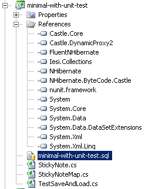

First Steps with Fluent NHibernate
I've started to play a bit with Fluent NHibernate. NHibernate is a Object Relational Mapping (ORM) tool, which aims to make persisting objects in a database easier. Fluent NHibernate is an add-on which allows in-code configuration, rather than the traditional XML file configuration. There's not much support for NHibernate at work, due to it's reputation for bloated complexity. But, let's proceed without prejudice and see how hard it is to make it work.
The code here uses the Fluent NHibernate 1.0 RTM binaries. The getting started guide is quite good, and the code here leans heavily on it. The wiki is also very helpful, though quite small.
It's best to start really simple with this type of thing, so I'm attempting the amazing feat of saving and loading a single record from a single table.

The picture shows the project set-up. The first 6 referenced assemblies came with the fluent NHibernate download, and are all necessary. I'm also using NUnit 2.5.2 for test automation.
First make the following table in a SQL Server 2008 database:
CREATE TABLE StickyNote
(
Id INT CONSTRAINT PK_StickyNoteId PRIMARY KEY IDENTITY(1,1),
Note NVARCHAR(1024) NOT NULL
)
I want to map the StickyNote table to following StickyNote object. Note that the properties must be made virtual for NHibernate to do its stuff.
namespace minimal_with_unit_test
{
public class StickyNote
{
public virtual int Id { get; private set; }
public virtual string Note { get; set; }
}
}
Next define the mapping between the object and the database. The mappings are made in the constructor of a dedicated class which inherits from ClassMap<>. You must identify the primary key of the object with the Id() method, other properties are mapped with the Map() method. I'm not doing foreign keys in this super simple example; see the getting started guide for that.
using FluentNHibernate.Mapping;
namespace minimal_with_unit_test
{
public class StickyNoteMap : ClassMap<StickyNote>
{
public StickyNoteMap()
{
Id(x => x.Id);
Map(x => x.Note);
}
}
}
If the property name and column name are different, you can supply the column name like this: Id(x => x.Id).Column("StickyNoteId"). If the class name and table name are different, you can supply the table name with a method call to Table() in the constructor, like this: Table("Sticky_Note"). Fluent NHibernate also provides an auto mapping feature, but I haven't tried that.
Now to test it. The set up of the test class makes a thing called ISessionFactory. ISessionFactory is a "threadsafe (immutable) cache of compiled mappings for a single database". ISessionFactory is an expensive object to create, so you should make only one per application. Again the fluent configuration is used to simplify database configuration.
using FluentNHibernate.Cfg;
using FluentNHibernate.Cfg.Db;
using FluentNHibernate.Testing;
using NHibernate;
using NUnit.Framework;
namespace minimal_with_unit_test
{
[TestFixture]
public class TestSaveAndLoad
{
private ISessionFactory SessionFactory { get; set; }
[TestFixtureSetUp]
public void CreateSessionFactory()
{
SessionFactory = Fluently.Configure()
.Database(MsSqlConfiguration.MsSql2008.ConnectionString(
"Server=(local);Database=NhibernateDemo;Trusted_Connection=True;"))
.Mappings(m => m.FluentMappings.AddFromAssemblyOf<StickyNote>())
.BuildSessionFactory();
}
Interaction with the database is done though a thing called ISession. An ISession is a "single-threaded, short-lived object representing a conversation between the application and the persistent store". ISession contains methods to get objects from, and persist object to the database. It also contains a method to create transactions. The following test saves an object, then loads a copy back into memory:
[Test]
public void SaveAndLoadTest()
{
var stickyNote = new StickyNote {Note = "Woop"};
using (var session = SessionFactory.OpenSession())
{
using (var transaction = session.BeginTransaction())
{
session.SaveOrUpdate(stickyNote);
transaction.Commit();
}
}
Assert.IsTrue(stickyNote.Id > 0);
using (var session = SessionFactory.OpenSession())
{
using (session.BeginTransaction())
{
var persistedNote = session.Get<StickyNote>(stickyNote.Id);
Assert.AreNotSame(stickyNote, persistedNote);
Assert.AreEqual(persistedNote.Note, "Woop");
}
}
}
There are a couple of things to note. The first is that the persisted note is a different object to the original note (Assert.AreNotSame()). If the code was changed, and all the work done within a single session, the same object would be returned in the Get query, since NHibernate caches the objects within a session. The second thing is that even the get (select) query is done within a transaction, which improves performance.
The final test does the same type of thing but uses persistence specification:
[Test]
public void SameAsBefore_ButWith_PersistenceSpecification()
{
using (var session = SessionFactory.OpenSession())
{
new PersistenceSpecification<StickyNote>(session)
//.CheckProperty(c => c.Id, 1)
// can't test the ID since it has identity insert
.CheckProperty(c => c.Note, "DeDoop")
.VerifyTheMappings();
}
}
The PerstenceSpecification creates a StickyNote object, inserts it in the database, retrieves the record into a new object and checks that the objects match. This looks like a real boon for testing; it considerably reduces the repetition and tedium of testing the mapping code. It does have a couple of limitations though. It doesn't work when you have foreign keys with the Inverse() relationship. Also as you can see it doesn't work for the Id column, since I'm using Identity Insert on the database for that. This identity thing is interesting. Though NHibernate works OK with identity insert, the preferred NHibernate way seems to be to let NHibernate handle Id creation. This is certainly a change in approach from previous work I've done.
So that's it, using Fluent NHibernate isn't too hard so far. But NHibernate is pushing for a few changes in how I do things:
- Making properties virtual.
- Putting select queries in a transaction.
- Not using identity insert on the database.
I guess the identity insert issue is the one that makes me uncomfortable, but maybe it would work out OK.